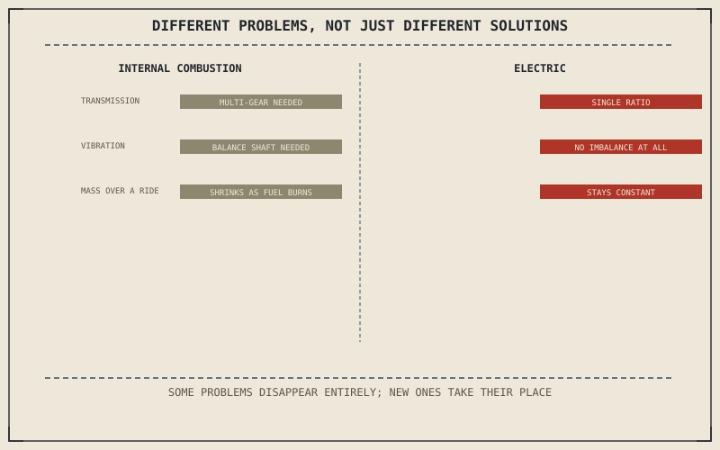

Every category in this part so far has varied chassis geometry, ergonomics, and styling around a shared internal combustion powertrain. An electric motorcycle changes the powertrain itself, and that change doesn't just shift where a familiar set of trade-offs sits — it removes some of them from the problem entirely while introducing others this book hasn't needed to cover until now.
Chapter 14.7 closed by pointing to exactly this: a genuinely different kind of shift, not styling or terrain, but the powertrain itself. This chapter is that shift.
Instant Torque, No Gearbox Needed
Chapter 3.4 explained why a motorcycle needs several gear ratios in the first place: an internal combustion engine's usable power lives within a specific RPM band, and gearing exists to keep the engine inside that band across a wide range of road speeds. An electric motor produces near-maximum torque from zero RPM, without that same narrow band, which is why many electric motorcycles run a single, fixed-ratio drive with no multi-speed transmission at all. This isn't a shortcut avoiding the transmission Chapter 3.1 through Chapter 3.4 described — it's a powertrain that never had the specific problem those chapters were solving.
No Balance Shaft, No Vibration Trade-Off
Chapter 2.17 spent a full chapter explaining how a balance shaft manufactures an equal, opposite vibration to cancel a reciprocating piston's own primary imbalance. An electric motor has no pistons stopping and reversing direction at all — nothing reciprocates, so there's no primary imbalance to cancel in the first place. This isn't a better solution to Chapter 2.17's problem; it's the complete absence of that problem, an important distinction this chapter is careful to make rather than implying electric motors simply solved vibration more cleverly.
An electric powertrain doesn't solve the gearbox and vibration problems this book spent several chapters explaining — it simply doesn't have them, while introducing a genuinely new problem in their place: a battery pack whose mass never shrinks the way a burning fuel tank's does.

A diagram contrasting an internal combustion powertrain's gearbox, balance shaft, and shrinking fuel-tank mass against an electric powertrain's single-ratio drive, absence of reciprocating imbalance, and constant, non-shrinking battery mass.
Battery Mass and Its New Weight-Distribution Problem
Chapter 4.1 named mass distribution as one of a chassis's three fundamental jobs, and a battery pack introduces a version of that problem an internal combustion motorcycle never quite faces the same way. Mounted low in the frame, a battery pack can genuinely help lower the centre of mass Chapter 4.1 described — but unlike a fuel tank that lightens steadily as a tank burns through its contents over a ride, a battery pack's mass stays essentially constant from full charge to empty, and total vehicle mass is often meaningfully higher than an equivalent combustion motorcycle to begin with. Chapter 4.1's mass-distribution job still applies in full; it's simply solving for a different, unchanging load.
A Common Misconception, Cleared Up Early
It's a common assumption that an electric motorcycle is simply a combustion motorcycle with a different engine dropped in — the same design problem, solved with a cleaner power source. This chapter has shown several combustion-specific problems, gearing and vibration balance among them, that don't exist at all for an electric powertrain, while a battery's constant, non-shrinking mass and the charging infrastructure it depends on introduce problems combustion motorcycles never had to solve. It isn't a strictly easier or harder version of the same problem — it's a genuinely different one.
Where This Leads
Chapter 14.9 closes this part by returning every category it's covered to the single question underneath all of them: what specific problem was this machine actually engineered to answer.
Key Concepts to Remember
- Near-maximum torque from zero RPM removes the narrow-power-band problem a multi-speed gearbox exists to solve.
- An electric motor has no reciprocating pistons, so it never has the primary-imbalance problem a balance shaft exists to cancel.
- A battery pack's mass stays essentially constant across a ride, unlike a fuel tank that lightens as it burns, changing what the chassis's mass-distribution job actually has to solve for.
Cross-References
| ← Ch. 3.4 | Established why a motorcycle needs several gear ratios; this chapter treats an electric motor's flat torque curve as removing that specific need. |
| ← Ch. 2.17 | Established the balance shaft as a piston engine's answer to primary imbalance; this chapter treats an electric motor as never having that problem at all. |
| ← Ch. 4.1 | Established mass distribution as a fundamental chassis job; this chapter treats a battery's constant mass as a genuinely new version of that same job. |
| → Ch. 14.9 | Closes Part XIV by returning every category to the single underlying question of what problem it was engineered to answer. |